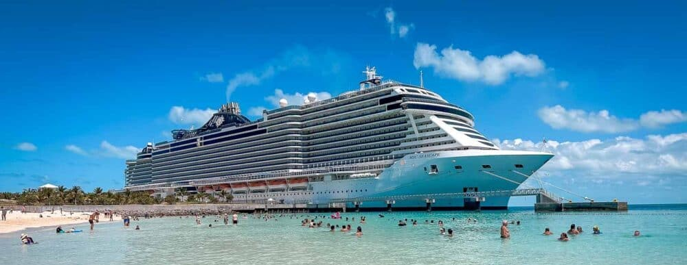
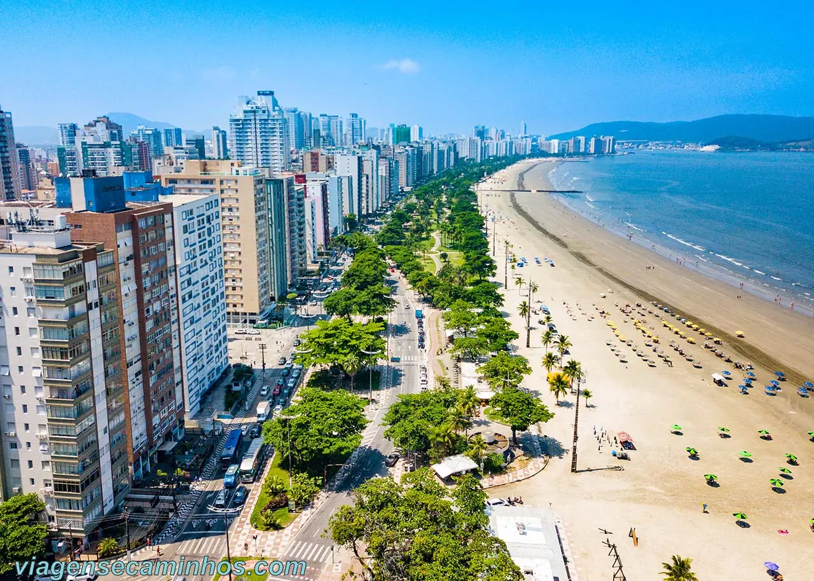
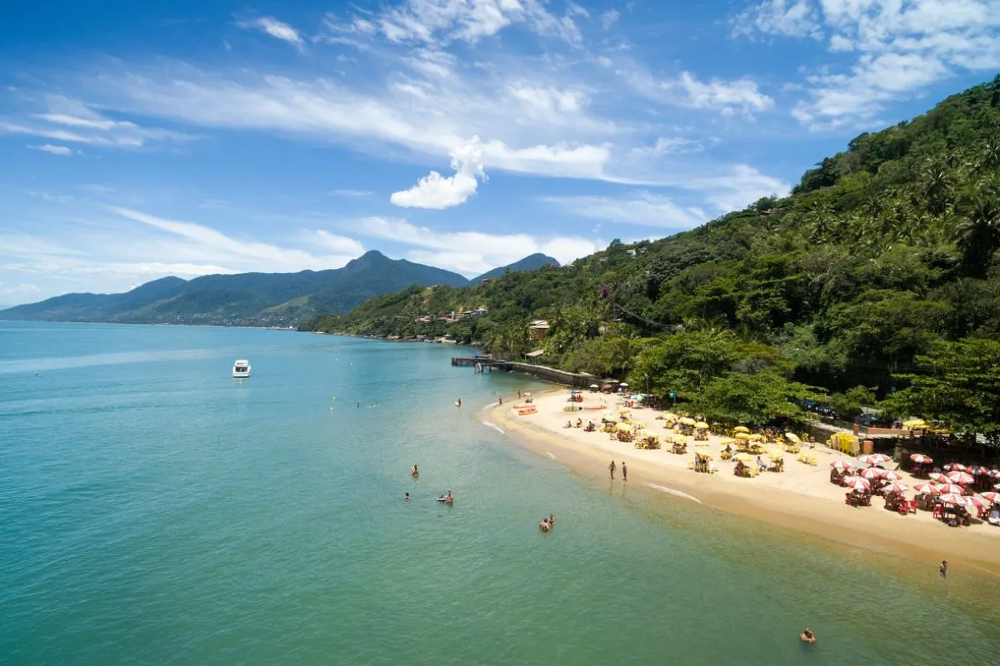
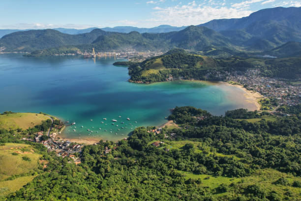
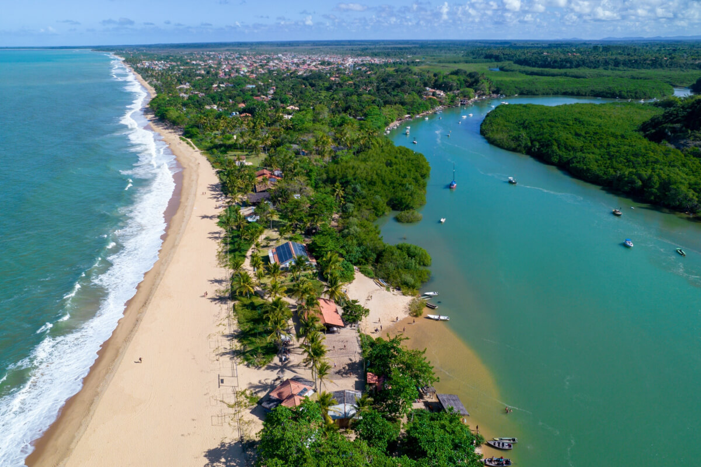
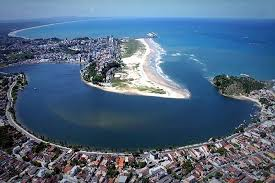
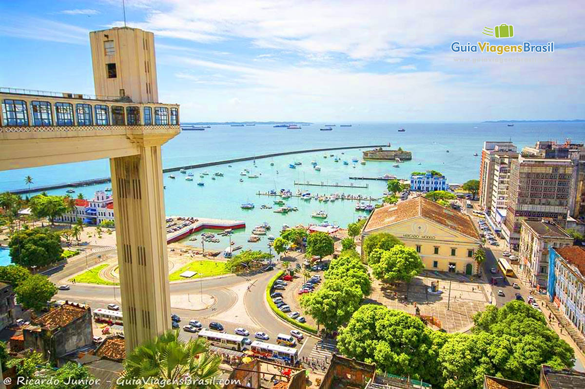
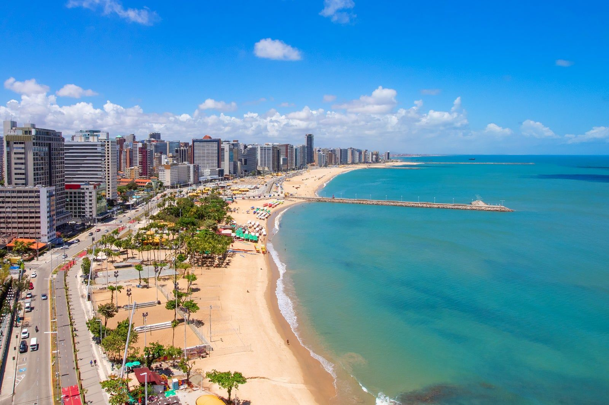
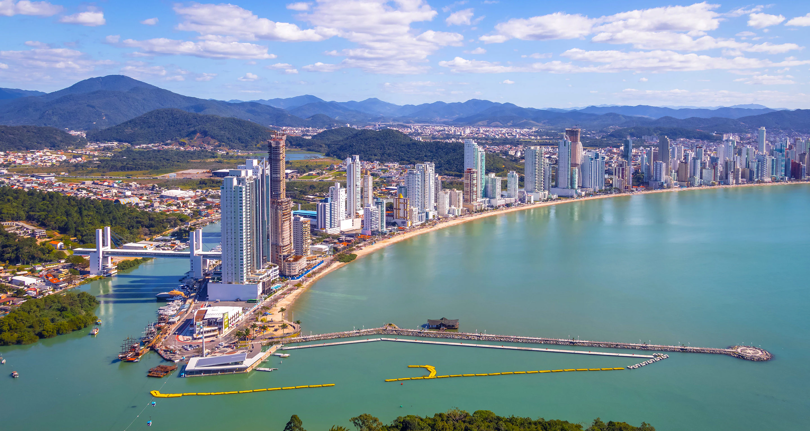

Explore os principais destinos de cruzeiro pelo litoral do Brasil e embarque em uma viagem cheia de conforto, diversão,paisagens deslumbrantes, transforme sua viagem em uma experiência inesquecível.

São Paulo

📍Santos
Principal porta de entrada marítima de São Paulo. O visitante desce no maior porto da América Latina e encontra atrações como o Museu Pelé, o Museu do Café, o Aquário e o charmoso bondinho que sobe o Monte Serrat.

📍Ilhabela
Arquipélago de beleza selvagem com praias paradisíacas, cachoeiras e trilhas na Mata Atlântica. Os navios fundeiam no mar e utilizam lanchas para o desembarque, garantindo uma experiência exclusiva em meio à natureza.
Rio de Janeiro

📍Rio de Janeiro Capital
O destino mais icônico do país. O píer Mauá recebe grandes navios a poucos passos do Museu do Amanhã, e dali se tem fácil acesso ao Cristo Redentor, Pão de Açúcar e às famosas praias de Copacabana e Ipanema.

📍Angra dos Reis
Paraíso das mais de 365 ilhas. O porto permite embarque rápido em lanchas que levam o turista para a Lagoa Azul, a Ilha Grande e praias de águas cristalinas, tudo cercado pela vegetação da Costa Verde.
Bahia

📍Porto Seguro
O berço do Brasil. O desembarque é próximo à Passarela do Álcool e ao centro histórico, onde aconteceu a primeira missa no país. Praias como Taperapuã e Coroa Vermelha completam o roteiro.

📍Ilhéus
Terra do cacau e do escritor Jorge Amado. O porto fica perto do centro histórico, onde se pode visitar a Catedral de São Sebastião, as antigas fazendas de cacau e as belas praias da região

📍Salvador
Berço da cultura brasileira. Desembarque no Comércio, bem ao lado do Pelourinho, Elevador Lacerda e Mercado Modelo. A cidade encanta com seu Centro Histórico, música, capoeira e a culinária baiana.
Ceará

📍Fortaleza
Capital cearense vibrante. O porto do Mucuripe fica perto da Feirinha da Beira-Mar, do Mercado dos Peixes e da Estátua de Iracema. A Praia do Futuro e o Centro Dragão do Mar completam o roteiro.
Santa Catarina

📍Balneario Camboriú
A cidade que mais cresce no sul do país. O píer fica no Barra Sul, próximo à Praia Central. Destaque para o Cristo Luz, o Parque Unipraias com seus bondinhos e o imponente prédio Yachthouse.

📍Itajaí
Principal porto catarinense para cruzeiros. Ao lado de Balneário Camboriú (10 minutos), serve como base para explorar a Costa Esmeralda, o comércio da região e, para quem deseja, o parque Beto Carrero.